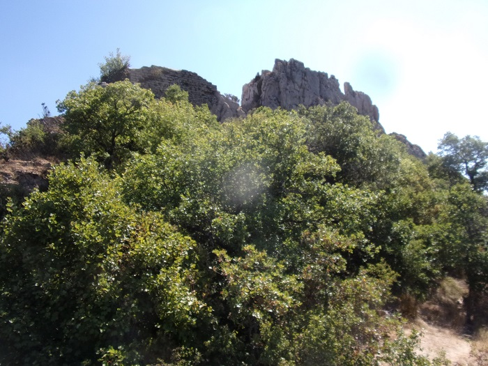
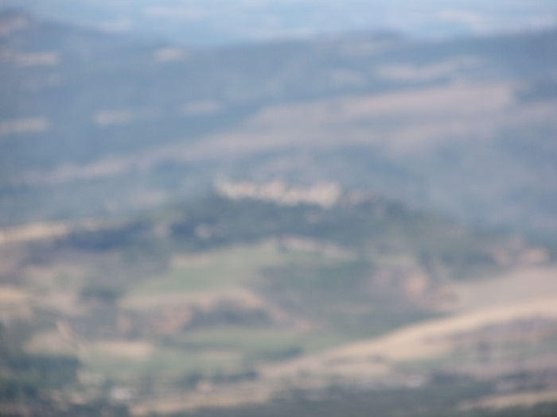

D'après l'abbé Mazières, une jacotte (petit chemin pour Saint Jacques de Compostelle) passait par Saint Martin Lys.
Cette jacotte passait également par Le Bézu (lieu dit "La Jacotte" justement ? sous le piton du chateau dit "des templiers" sur les cartes IGN (castrum d’Albesuno) - aujourd'hui sur le sentier cathare GR 367)
Lors de cette randonnée j'ai tenté d'identifier cette voie qui menait à Saint Martin depuis les hauteurs du chateau.
Même si l'hypothèse de l'abbé Mazières est peut être hasardeuse, la vue depuis le piton accueillant le château n'en est pas moins remarquable, du Bugarach à Rennes-le-Chateau.
Mes photos sont particulièrement ratées aussi j'espère que celles de Silas pourront avantageusement les remplacer...
Le panneau indiquant la direction du château depuis le hameau du Bézu, les 2 kilomètres sont la longeur du chemin carrossable jusqu'au début du sentier permettant d'accéder au château

Le panneau décrivant l'historique du château et plan des fouilles
Ruines de l'église à l'extrémité opposée du château
Restes de constructions autour du château
Panneau d'accueil en bas du château
Ruines du château rencontrées en montant vers le piton
Piton rocheux dominant les restes du chateau - je n'ai pas tenté l'escalade, me disant comme le renard de la fable et ses raisins trop verts, que la vue que j'avais d'en bas était la même que celle que j'aurais eu d'en haut...

Vue panoramique de Rennes-le-château à Bugarach - Photo proposée par Silas
Vue vers le Bugarach
Vue vers Rennes le Chateau

Prolongement de la barrière rocheuse portant le château